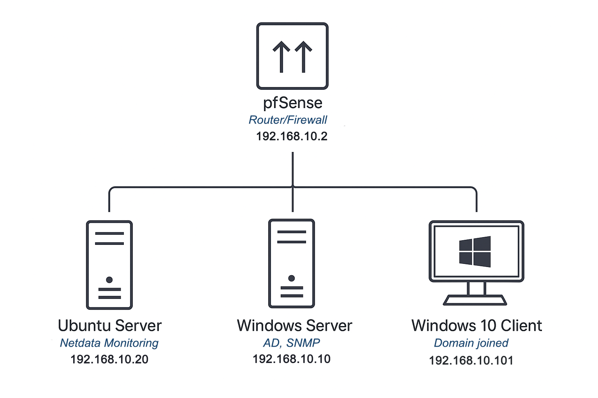

> Walid Gourideche
IT-Fachkraft für Systemintegration und Netzwerke
Engagierter IT-Fachmann mit Fokus auf Netzwerktechnik und Systemadministration. Ich bringe praktische Erfahrung, eine strukturierte Arbeitsweise und eine internationale Perspektive mit. Mein Ziel ist es, effiziente IT-Lösungen zu gestalten – von Marokko bis Deutschland.
Video-Vorstellung

Bildungsweg
Fachinstitut für Angewandte Technologie
Taza, Marokko
Abgeschlossene Ausbildung in IT-Netzwerken und -Systemen
- Mitwirkung an von Studenten geleiteten Sitzungen zu Linux, Virtualisierung und Windows Server.
- Aktiv in Lerngruppen zur CCNA-Vorbereitung, GNS3 und technischer Fehlerbehebung.
Klinikum Hann. Münden
Hann. Münden, Deutschland
Sechsmonatige Ausbildung zum Pflegefachmann
- Einhaltung strenger regulatorischer Standards, einschließlich Datenschutz- und Sicherheitsprotokollen.
- Verbesserung der Sprachkenntnisse durch tägliche Praxis und kulturelle Nuancen.
Interdisziplinäre Fakultät von Taza
Taza, Marokko
Einjähriges Grundstudium in Mathematik und Informatik
- Studium mathematischer Kernkonzepte wie Analysis, lineare Algebra und diskrete Mathematik.
- Anwendung mathematischer Logik zur Lösung von Problemen in Algorithmen und Informatik.
Weiterführende Schule Al Falah 2
Taza, Marokko
Internationales Abitur, Schwerpunkt Physik
- Grundlagen in Mathematik und Physik, wichtige Kompetenzen für IT- und Netzwerktechnik.
- Entwicklung von technischem Verständnis und systematischem Denken.
Berufserfahrung
Regionale Steuerdirektion
Taza, Marokko
Praktikant IT-Netzwerk
- Konfiguration und Wartung zentraler Netzwerkgeräte zur Gewährleistung stabiler und sicherer Konnektivität.
- Behebung von Konnektivitäts- und Systemproblemen, was die Netzwerkverfügbarkeit und die Effizienz des Supports verbesserte.
- Unterstützung bei Netzwerksicherheitsprüfungen und Zugangskontrollen zur Stärkung der Datenschutzmaßnahmen.
Click Service
Taza, Marokko
IT-Spezialist
- Installation, Konfiguration und Aktualisierung von Software und Betriebssystemen für Kunden.
- Verwaltung des IT-Inventars und Sicherstellung des Lagerbestands.
- Einrichtung und Wartung lokaler Netzwerke, einschließlich Router und WLAN-Konfigurationen.
Gesundheitsministerium
Taza, Marokko
Praktikant Systemadministration
- Unterstützung bei der Bereitstellung von VMs mit VirtualBox/VMware für interne Tests.
- Mithilfe bei Active-Directory-Aufgaben (Benutzerkonten, Gruppenrichtlinien).
- Unterstützung bei der Konfiguration der lokalen Netzwerkinfrastruktur (DNS/DHCP).
Seniorenresidenz Inc.
Taza, Marokko
Praktikant IT-Beratung
- Entwurf und Bereitstellung von IT-Systemen zur Verbesserung der internen Kommunikation.
- Installation und Konfiguration von Hardware und Netzwerkgeräten.
- Durchführung von Anwenderschulungen und technischem Support.
Kernkompetenzen
Netzwerkadministration
Cisco (IOS), GNS3, Wireshark, DNS, DHCP, TCP/IP, Subnetting, VLAN, Routing & Switching
Systemadministration
Windows Server, Linux (Ubuntu/Debian), Active Directory, VirtualBox, VMware, Benutzerverwaltung, Rechtevergabe
IT-Support & Hardware
Softwareinstallation, Fehleranalyse, Hardwarediagnose, Kundenberatung, technische Dokumentation
Projekt: Virtualisiertes Home-Lab

Eine End-to-End-Infrastruktur
Dieses Projekt demonstriert den Aufbau einer kompletten, virtualisierten IT-Umgebung in VMware, um eine realistische Unternehmens-IT nachzubilden. Die Ziele waren die Einrichtung einer sicheren Netzwerksegmentierung mit einer pfSense-Firewall, die Implementierung einer zentralen Benutzerverwaltung mit Windows Server Active Directory und die Integration einer Echtzeit-Monitoring-Lösung mit Netdata zur Überwachung der gesamten Infrastruktur.
Häufig Gestellte Fragen
Ich verstehe diese Frage gut. Aber mit den richtigen Unterlagen und Dokumenten kann das Ganze wirklich reibungslos ablaufen. Ich war bereits in Deutschland und habe den Visaprozess selbst durchlaufen, daher kenne ich mich mit dem Ablauf aus. Ich kann die nötigen Schritte selbstständig übernehmen und mache es für beide Seiten so einfach wie möglich. Falls Sie sich ein Bild vom Ablauf machen möchten, empfehle ich dieses kurze Video, das den Prozess gut erklärt.
Da ich bereits in Deutschland war, verfüge ich über ein gutes Netzwerk für Unterkunft und soziale Kontakte, die mir eine schnelle und zuverlässige Wohnungssuche ermöglichen. Somit ist die Wohnungsfrage für mich gesichert.
Ich bin eigentlich im IT-Bereich orientiert, aber ich finde, dass ein grundlegendes Verständnis für Pflege und Gesundheit in vielen Lebenslagen wichtig ist. Als ich das Ausbildungsangebot im Pflegebereich bekam, habe ich es als Chance gesehen – erstens, um das deutsche Arbeitsumfeld besser kennenzulernen, und zweitens, um soziale und menschliche Fähigkeiten zu entwickeln, die mir auch in der IT weiterhelfen können. Diese Erfahrung hat mir definitiv geholfen, und ich bin dankbar dafür.
Deutschland bietet sehr gute Ausbildungsmöglichkeiten und berufliche Perspektiven, besonders im IT-Bereich. Außerdem schätze ich die hohe Arbeitsqualität und die internationale Atmosphäre hier.
Mein Deutsch hat sich während meines Aufenthalts in Deutschland stark verbessert, sodass ich mich gut an verschiedene Situationen anpassen kann. Mein Englisch habe ich auf ein Niveau der muttersprachlichen Kompetenz gebracht.
Noch Fragen? Kontaktieren Sie mich über
Telefon
Adresse
Cite Al Amane Imm A Apt 1
35000 Taza | Marokko